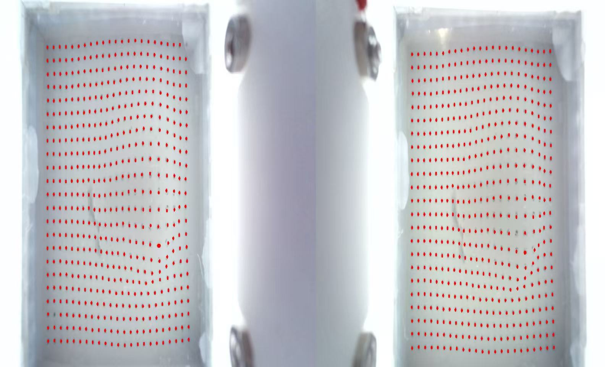
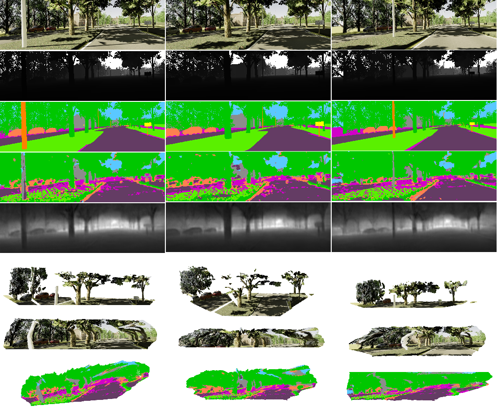

A vision-based tactile sensing system using binocular cameras. Built a deep learning-based stereo processing framework for marker detection and disparity estimation, with system calibration and parameter optimization for long-term stability and a real-time visualization pipeline.

Multi-task joint learning framework with a shared encoder and task-specific decoders, a multi-objective training strategy with adaptive loss balancing, and 3D semantic point cloud reconstruction using Open3D. Demonstrated improvements in both segmentation accuracy and depth reconstruction.
Developed an embedded system for real-time handwritten digit recognition using machine learning algorithms optimized for resource-constrained devices.
Comprehensive image processing project implementing camera calibration algorithms and stereo matching techniques for depth estimation.
Multi-directional garbage detection and collection robot for water surface cleaning, integrating computer vision and autonomous navigation.